ccontrol 查看/修改分区和节点状态
ccontrol可以查看/修改分区和节点的状态。
主要命令
- help：显示帮助
- show: 显示实体的状态，默认为所有记录
- add：添加一个分区或者节点
- update：修改作业/分区/节点信息
- hold：暂停作业调度
- release：继续作业调度
支持的命令行选项
- -h/--help: 显示帮助
- --json：json格式输出命令执行结果
- -v/--version：查询版本号
- -C/--config string：配置文件路径(默认 "/etc/crane/config.yaml")
查看
支持的命令选项
- config: 查询配置信息
- job：查询作业信息
- node：查询节点信息
- partition：查看集群分区情况
ccontrol show -h
1. 查看分区状态
ccontrol show partition
ccontrol show partition运行结果展示
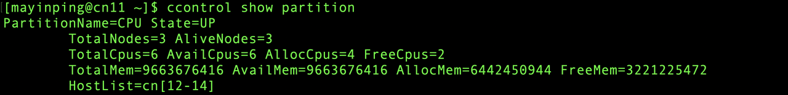
主要输出项
- PartitionName：分区名
- State：分区状态
- TotalNodes：分区节点数目
- AliveNodes：分区中可运行的节点数目
- TotalCpus：分区中所有节点总CPU数目
- AvailCpus：分区中所有可以使用的CPU数目
- AllocCpus：分区中已经被分配的CPU数目
- FreeCpus：分区中空闲的CPU数目
- TotalMem：分区节点的总内存
- AvailMem：分区中当前可以使用的内存大小
- AllocMem：分区中已分配的内存大小
- FreeMem：分区中空闲的内存大小
- HostList：分区中所有节点的节点名列表
2. 查看节点状态
ccontrol show node
ccontrol show node运行结果展示

主要输出项
- NodeName：节点名
- State：节点状态
- IDLE：节点空闲，可使用
- DOWN：节点宕机，不可用
- CPUs：节点CPU数目
- AllocCpus：节点已分配的CPU数目
- FreeCpus：节点空闲的CPU数目
- RealMemory：节点的实际内存大小
- AllocMem：节点已经分配的内存大小
- FreeMem：节点空闲的内存大小
- Patition：节点所属分区
- RunningTask：节点上正在运行的作业数量
3. 查看作业状态
ccontrol show job
ccontrol show job 运行结果展示

主要输出项
- JobId：作业号
- JobName：作业名
- UserId：作业所属用户
- GroupId：分组id
- Account：作业所属账户
- JobState：作业状态
- RunTime：作业运行时间
- TimeLimit：作业运行时间限制
- SubmitTime：作业提交时间
- StartTime：作业开始时间
- EndTime：作业结束时间
- Partition：作业所属分区
- Nodelist：作业运行的节点
- NumNodes：节点数量
2.修改
支持的命令行选项
- job：查询作业信息
- node：查询节点信息
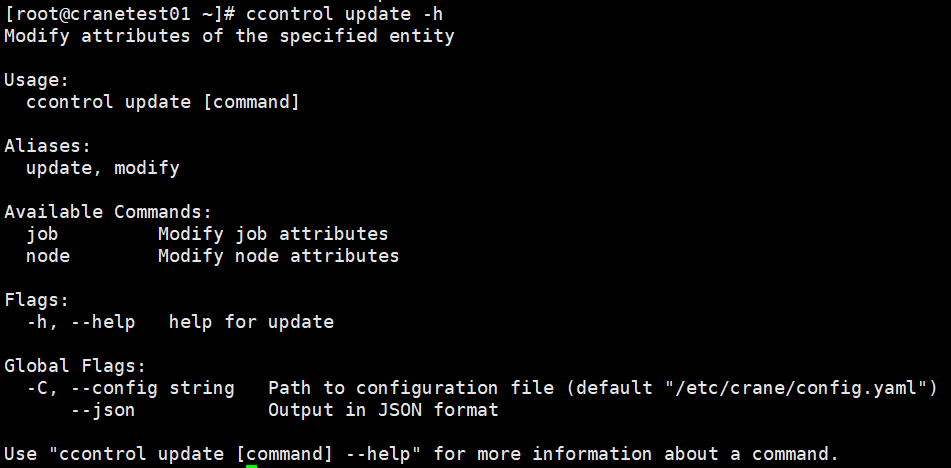ccontrol update -h
1. 修改作业信息
支持的命令行选项
- -h/--help: 显示帮助
- -J/--job-name string：作业名
- -P/--priority float： 作业优先级
- -T/--time-limit string：作业超时时长
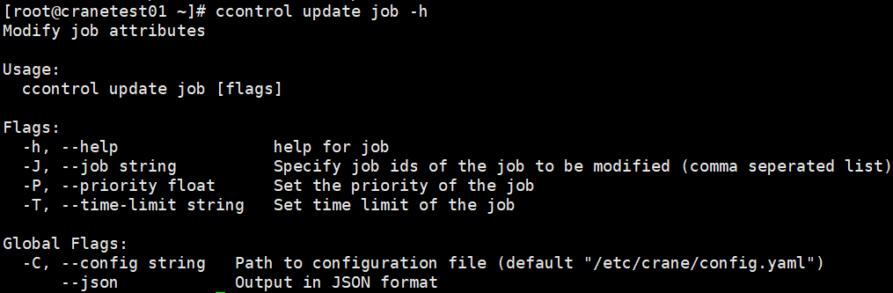ccontrol update job -h
ccontrol update job -J 30685 -T 0:25:25
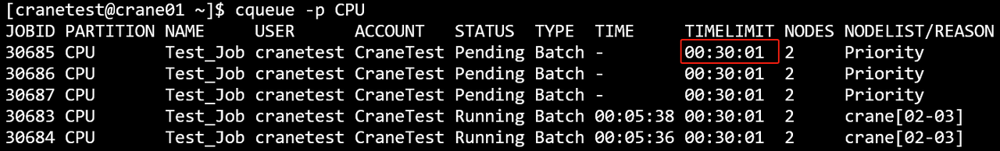 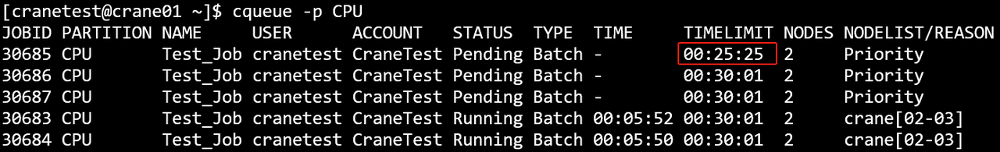
ccontrol update job -J 191 -P 2.0

2.修改节点信息
支持的命令行选项
- -h/--help: 显示帮助
- -n/--name string：节点名
- -r/--reason string： 设置修改原因
- -t/--state string：修改节点状态
ccontrol update node -h
ccontrol update node -n crane01 -t drain -r improving performance
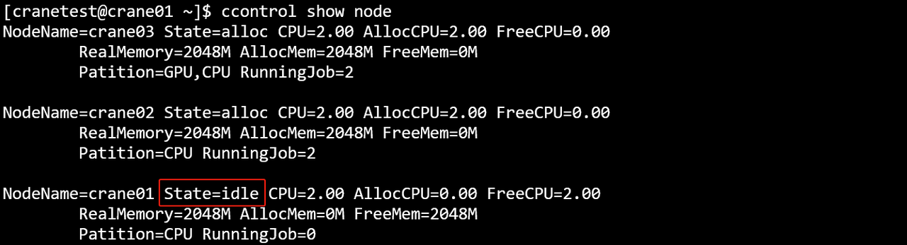 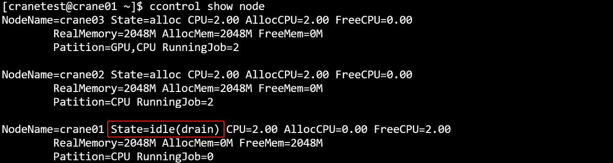
主要参数
- -c/--cpu：节点的核心数（-h列表无该参数）
- -M/--memory：节点的内存大小，默认是MB（-h列表无该参数）
- -n/--name：节点名称
- -P/--partition：节点所属的分区（-h列表无该参数） 以下参数和上面参数不能一起设置，下面参数用于修改节点状态
- -r/--reason：设置状态改变原因
- -t/--state：设置节点状态
3. 暂停/恢复
3.1. 暂停作业调度
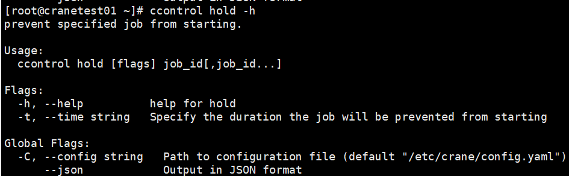
主要参数
- --time-limit/-T：修改时间限制
ccontrol hold 30751 #暂停调度编号为30751的任务
ccontrol hold 30751 -t 0:25:25 #暂停调度编号为30751的任务25分钟25秒钟（随后解除暂停）
- hold 接受 job_id 的方式与 ccancel 相同，要求为逗号分隔的任务编号。
- 只能 hold pending 任务。
- 如果此前有设置解除暂停的定时器，该操作会取消原有的定时器。
- 使用 cqueue 查询时，如果任务被 hold，Node(Reason) 一列会显示 "Held"。 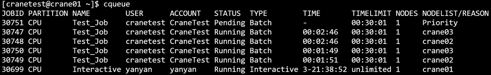 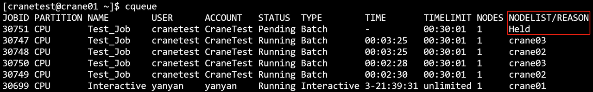
3.2. 继续作业调度
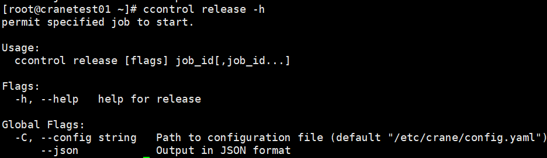
ccontrol release 30751
- 如果此前有设置解除暂停的定时器，该操作会取消原有的定时器。
- 只能 release pending 任务1 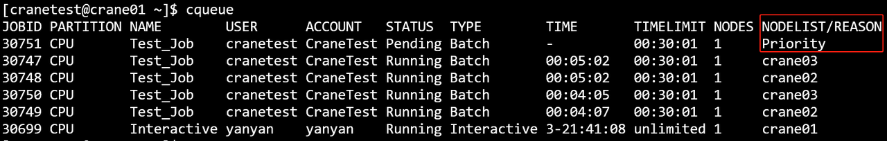
completion
主要命令
- bash：为bash生成自动补全脚本
- fish：为fish生成自动补全脚本
- powershell：为powershell生成自动补全脚本
- zsh：为zsh生成自动补全脚本